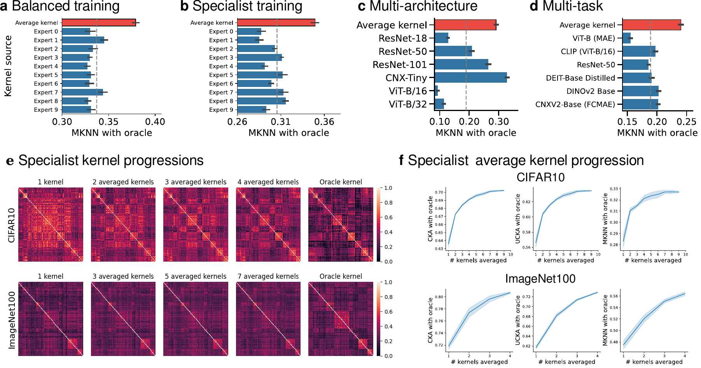
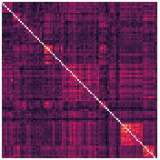
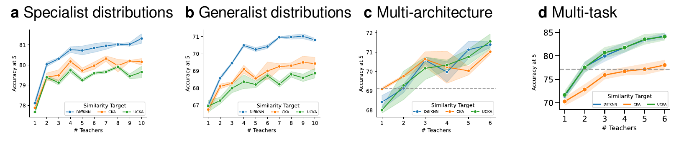
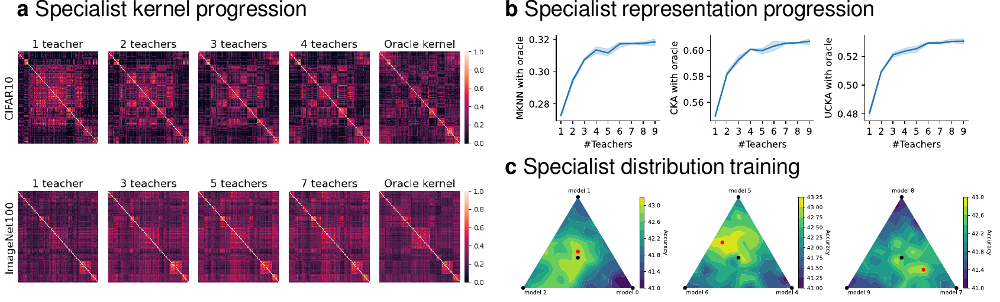
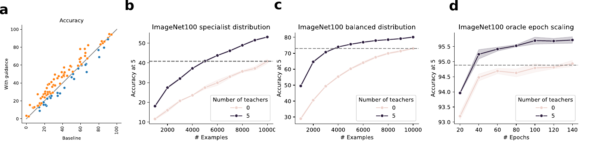
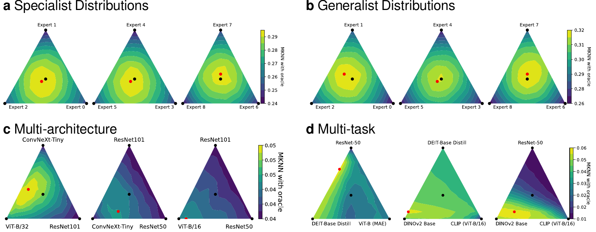

Model ensembling in representation space: average kernels from independently trained models, compare to a stronger oracle, and train a student toward the averaged similarity structure.
If multiple artists are asked to draw a circle by hand, each one will produce something slightly imperfect. Yet, the average of their sketches can look strikingly close to ideal. We investigate whether representations produced by separately trained models adhere to a similar principle. Precisely, we study the average model kernel: the Gram matrix computed from all model embeddings. Using metrics of representational similarity, i.e., Centered Kernel Alignment (CKA) and Mutual k-Nearest Neighbors (MKNN), we show that the average kernel increases in similarity with the kernel of a stronger model. We demonstrate this for vision models trained on different datasets, skewed datasets, models of different architectures, and even models trained on different tasks. Empirically, we even find that the similarity landscape with respect to teacher kernels is a convex basin. Finally, we show how averaging can be directly translated into improved model performance by using DiffKNN, a differentiable version of MKNN, to optimize a student network for representational similarity with the average kernel. We observe that the resulting student model increases in task accuracy with the number of models being averaged. More broadly, our findings hint at a more general framing that can be given for model-merging techniques, in which models can be thought to lie in the same loss basin with respect to their representations.
A model layer maps each input example to an embedding. Taking all pairwise inner products among those embeddings produces a kernel matrix, so the entry Kij measures how similar example i is to example j under that layer's representation.
The method averages these matrices across teachers and layers, then asks whether the averaged kernel is closer to a stronger oracle model than any individual teacher kernel. The same averaged kernel can also guide a student through DiffKNN, CKA, or UCKA alignment losses.

We visualize a kernel from a network trained on a specialist distribution of ImageNet-100. The slider shows the student-kernel progression as more kernels are averaged together. The oracle kernel is shown last.

The paper trains students with cross-entropy plus a similarity objective to the averaged teacher kernel. Across the results, DiffKNN, CKA, and UCKA targets improve student representations, with DiffKNN giving the strongest accuracy curves!


In the ImageNet-100 experiments, the guided student curves improve performance on unseen classes and reach baseline performance with fewer examples or fewer epochs.

We have even more results showcasing how kernel averaging improves representations across several settings, showing general convexity across a set of models.

DiffKNN uses all teachers as the similarity target: n=5 for CIFAR10 and n=10 for ImageNet-100. Standard errors are across three seeds.
| Training | CIFAR10 Acc@1 | CIFAR10 Acc@5 | ImageNet-100 Acc@1 | ImageNet-100 Acc@5 |
|---|---|---|---|---|
| Baseline | 55.68 ± 0.68 | 94.37 ± 0.11 | 39.92 ± 0.02 | 65.99 ± 0.22 |
| DiffKNN | 65.31 ± 0.39 | 96.92 ± 0.06 | 44.59 ± 0.28 | 70.81 ± 0.09 |
| CKA | 64.24 ± 0.18 | 96.93 ± 0.17 | 42.94 ± 0.22 | 69.43 ± 0.36 |
| UCKA | 63.87 ± 0.20 | 96.38 ± 0.12 | 42.43 ± 0.36 | 68.87 ± 0.28 |
| Prediction ensemble | 70.62 ± 0.31 | 96.89 ± 0.075 | 56.49 ± 0.33 | 71.52 ± 0.28 |
| Oracle | 91.50 ± 0.09 | 99.67 ± 0.02 | 84.08 ± 0.10 | 95.61 ± 0.03 |
| Training | CIFAR10 Acc@1 | CIFAR10 Acc@5 | ImageNet-100 Acc@1 | ImageNet-100 Acc@5 |
|---|---|---|---|---|
| Baseline | 81.52 ± 0.53 | 98.78 ± 0.08 | 52.98 ± 0.26 | 76.95 ± 0.32 |
| DiffKNN | 84.29 ± 0.06 | 99.14 ± 0.02 | 57.44 ± 0.07 | 81.31 ± 0.23 |
| CKA | 82.62 ± 0.11 | 98.98 ± 0.08 | 56.28 ± 0.26 | 80.16 ± 0.16 |
| UCKA | 83.69 ± 0.27 | 99.04 ± 0.05 | 55.73 ± 0.20 | 79.65 ± 0.29 |
| Prediction ensemble | 86.38 ± 0.03 | 95.34 ± 0.08 | 64.72 ± 0.28 | 79.45 ± 0.16 |
| Oracle | 91.50 ± 0.09 | 99.67 ± 0.02 | 84.08 ± 0.10 | 95.61 ± 0.03 |
This work was supported by the Center for Brains, Minds, and Machines, NSF STC award CCF-1231216, the NSF award 2124052, the MIT CSAIL Machine Learning Applications Initiative, the MIT-IBM Watson AI Lab, the CBMM-Siemens Graduate Fellowship, the DARPA Artificial Social Intelligence for Successful Teams (ASIST) program, the DARPA Mathematics for the DIscovery of ALgorithms and Architectures (DIAL) program, the DARPA Knowledge Management at Scale and Speed (KMASS) program, the DARPA Machine Common Sense (MCS) program, the United States Air Force Research Laboratory and the Department of the Air Force Artificial Intelligence Accelerator under Cooperative Agreement Number FA8750-19-2-1000, the Air Force Office of Scientific Research (AFOSR) under award number FA9550-21-1-0399, and the Office of Naval Research under award number N00014-20-1-2589 and award number N00014-20-1-2643. The views and conclusions contained in this document are those of the authors and should not be interpreted as representing the official policies, either expressed or implied, of the Department of the Air Force or the U.S. Government. The U.S. Government is authorized to reproduce and distribute reprints for Government purposes notwithstanding any copyright notation herein.